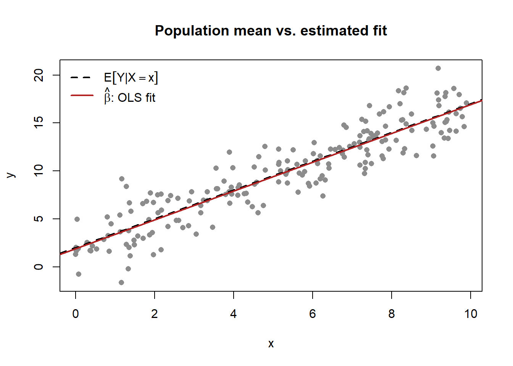

flowchart TD
F["Foundations<br/>(Introduction · History)"]
C["Pillar I — Constructs<br/>construct vs variable · satisfaction · relational · brand"]
D["Pillar II — Substantive Domains<br/>branding · pricing · advertising · CLV · innovation · entry"]
M["Pillar III — Methodology<br/>data · measurement · causal inference · choice & Bayes"]
U["Unstructured & Multimodal Data<br/>text · image · audio · video · fusion"]
S["Integrative Seminars<br/>consumer behavior · analytical · strategy · AI/ML · platforms"]
R["Research Craft<br/>writing · review · reporting"]
K["Case Studies"]
F --> C
F --> D
C --> D
C --> M
D --> M
M --> U
M --> S
D --> S
U --> S
M --> R
S --> R
D --> K
M --> K
1 Introduction
Marketing research sits at an awkward and productive intersection. It is a behavioral science, concerned with why people attend, prefer, choose, and stay loyal; it is an economic science, concerned with how firms price, advertise, and compete; and it is increasingly a computational science, concerned with how to extract credible quantities from messy, high-dimensional, observational data. This book treats all three as one subject. Its premise is that a brand premium, a diffusion curve, a click-through elasticity, and a structural demand parameter are not separate worlds but different views of the same underlying problem: connecting a latent construct to an observable consequence in a way that survives scrutiny.
The book is written for two readers at once, and almost every chapter is built to serve both. The first is the doctoral researcher who needs the construct defined formally, the estimator written out, the identifying assumptions stated, and the failure modes named—the reader who will be asked in a seminar what breaks if that assumption is false. The second is the senior technical practitioner—a data scientist, research lead, or quantitatively trained marketing strategist—who needs the intuition first, a runnable implementation second, and an honest account of when a method earns its keep and when it does not. These two readers are usually addressed by separate literatures. The wager of this book is that they are better served together: rigor without intuition is inert, and intuition without rigor is unreliable, and the gap between a published identification strategy and a production decision is smaller than either side tends to assume.
That dual audience dictates the form of every chapter. Each idea leads with intuition, follows immediately with formalism, and closes with reproducible code. Constructs are defined before they are measured; methods are stated as an estimator with explicit assumptions before they are applied; and causal claims are flagged as causal, correlational claims as correlational, never blurred. The standard is not encyclopedic coverage—the field is far too large for that—but operational competence: after a chapter, the reader should be able to define the construct, estimate the quantity, defend the assumptions, and recognize the conditions under which the whole apparatus fails.
This opening chapter does three things. It states the scope and aims of the book and the audiences it serves; it lays out how the material is organized into parts and how to read across them; and it fixes the mathematical notation used throughout, in a master table the rest of the book treats as binding. Notation is not bookkeeping. A book that connects behavioral constructs, econometric estimators, and structural models will write down expectations, vectors, matrices, parameters, and their estimates on nearly every page; if a hat means an estimator in one chapter and a transformed variable in the next, the reader pays for it constantly. The conventions below are set once and honored everywhere.
1.1 Scope and Aims
Marketing as an academic discipline is young relative to economics or psychology, and it has spent much of its history negotiating its own identity—borrowing theory from the social sciences while insisting on the distinctiveness of exchange, markets, and the firm’s marketing decisions as objects of study (Bartels 1988; Sheth, Gardner, and Garrett 1988).1 That negotiation left the field with an unusually wide methodological range—lab experiments, econometric models of observational data, analytical game theory, structural estimation, and, increasingly, machine learning on text and images—held together by a common substantive concern with demand and the firm’s influence on it. A book that claims to cover marketing research must therefore be plural about method while disciplined about evidence.
Three commitments define the book’s scope.
First, it is construct-centered before it is method-centered. A recurring failure in applied work is to reach for a method before the quantity of interest is defined. The book inverts that order: it asks what brand equity, satisfaction, innovativeness, or customer lifetime value actually is—as a formally defined object—before asking how to measure or estimate it. A construct is a theoretical concept that is not directly observable and must be inferred from observable indicators or behavior; the central difficulty of the field is that its most important quantities are constructs, not variables, and the construct–variable distinction is foundational enough to receive its own treatment (Chapter 3).
Second, it is identification-aware. Most marketing data are observational: firms do not randomize their prices, advertising, or product launches, and consumers self-select into exposure and purchase. The book therefore treats identification—the question of whether the data, given the assumptions, can recover the target quantity at all—as a first-class concern rather than a footnote. For each method it asks not only how to estimate but what identifies the estimate and what breaks when the identifying assumption fails. This is the discipline that separates a number from a finding.
Third, it is reproducible. Every worked example ships as runnable, seeded R code. The book is a Quarto project: prose, mathematics, figures, and code live in one source and compile to one artifact, so a reader can run, perturb, and break the examples rather than trusting them. All figures are original—Mermaid diagrams for concepts and relationships, R-generated graphics for anything data-driven—so nothing in the book depends on third-party images.
What the book is not: it is not an introductory marketing textbook, not a software manual, and not a literature review that catalogs findings without mechanism. It assumes the reader wants to understand why a result holds and when it can be relied upon, and it is willing to spend formalism to get there.
1.2 The Two Audiences
The two readers want different things from the same page, and naming the tension makes it manageable. Table 1.1 contrasts what each brings and what each needs; the chapters are written so that following one reader’s thread never requires abandoning the other’s.
| Dimension | PhD researcher | Senior technical practitioner |
|---|---|---|
| Primary goal | Contribute defensible knowledge | Make a defensible decision |
| Reads for | Constructs, derivations, identification | Intuition, implementation, trade-offs |
| Tolerance for formalism | High; wants the proof | Moderate; wants the consequence |
| Tolerance for ambiguity | Names open questions as open | Wants a recommendation under uncertainty |
| Failure they fear | An unidentified or confounded claim | A model that misleads a real choice |
| What the chapter owes them | Assumptions stated, estimator written out | Runnable code, honest scope conditions |
The book serves both by a fixed ordering within each idea—intuition, then formalism, then code, then pitfalls—rather than by segregating “applied” and “theoretical” sections. The practitioner who stops after the intuition and the code still leaves with something correct; the researcher who reads the formalism and the identification discussion in full leaves with something complete. Asides that matter to only one reader are placed in footnotes or callouts so the main line stays legible to both.2
A word on prerequisites follows from this. The book assumes a working command of probability and statistics through linear regression and maximum likelihood; basic linear algebra (vectors, matrices, and what an inverse and an eigenvalue are); calculus sufficient to read a first-order condition; and enough R to read and modify a tidyverse or base-R script. It does not assume prior exposure to discrete-choice models, structural estimation, causal-inference designs, or Bayesian computation—each is developed from its intuition in the methodology chapters. A reader missing one of the prerequisites can still follow the substantive chapters by treating the formal passages as reference and leaning on the intuition and code; a reader with all of them can read the book front to back as a unified technical treatment.
1.3 How the Book Is Organized
The book is built on three pillars, and it is worth naming them at the outset, because they are the logic behind every part that follows.
1.3.1 The three pillars
Marketing scholarship, like the social sciences it draws on, is organized along three intersecting domains. Doctoral seminars use this framing to locate any piece of research (MacInnis 2011; Hunt 1976), and a study always lives somewhere in the space the three pillars span:
- The construct domain is the set of unobservable concepts a theory is about: satisfaction, trust, perceived risk, brand equity. Its defining concern is construct validity, whether a measure actually captures the concept it names (Cronbach and Meehl 1955).
- The substantive domain is the real-world phenomenon or context being explained: pricing, advertising, retailing, platforms, health. Its defining concern is relevance and how far a finding generalizes beyond the setting that produced it.
- The methodological domain is the apparatus of measurement, identification, and inference that turns data into a defensible claim. Its defining concern is whether the design actually supports the conclusion drawn from it.
A contribution can advance any single pillar, by sharpening a construct, illuminating a phenomenon, or improving a method, but the strongest work moves more than one at once, and the most common error is to mistake progress on one pillar for progress on another (Yadav 2010; Summers 2001). The book is organized in exactly this order: constructs supply the concepts, substantive domains supply the questions, and methodology supplies the evidence. Two further parts then extend the methodological pillar outward, to the unstructured and multimodal data that modern marketing runs on and to the integrative seminars that braid all three pillars together, before the closing material on research craft and worked cases.
This ordering reverses how research is often taught (method first), but it matches how research is actually done: a question about a construct in a substantive domain motivates a method, not the other way around. Figure 1.1 shows the dependency structure; the parts are summarized below.
Foundations. This introduction and the history of marketing thought (Chapter 2) set the intellectual frame: where the field’s questions come from, why it is methodologically plural, and what standard of evidence the book holds itself to.
Pillar I, Constructs. The first pillar draws the line between a construct (an unobservable theoretical quantity) and a variable (its observable proxy), then works that distinction through the field’s major construct families: evaluative judgments such as customer satisfaction (Chapter 4), the relational constructs of trust and loyalty, the brand constructs, and the cognitive and affective processes behind them. These chapters establish the habits the rest of the book relies on: define formally, measure honestly, and never confuse the proxy with the thing.
Pillar II, Substantive Domains. The longest part takes the field’s major phenomena in turn: branding (Chapter 5), online environments (Chapter 6), advertising (Chapter 7), sales (Chapter 8), customer lifetime value (Chapter 9), endorsement and influencer marketing, nudges, pricing, service, health, gaming, and the marketing and finance interface (Chapter 17), through privacy (Chapter 18), and the strategy-facing phenomena of innovation (Chapter 19), market entry, and virality and word of mouth (Chapter 21). Each domain chapter leans on the constructs of the first pillar and points forward to the methods of the third.
Pillar III, Methodology. Here the book develops the estimation machinery: metrics (Chapter 22), data (Chapter 23), modeling, measurement and scaling (Chapter 29), surveys and experiments (Chapter 30), preference measurement (Chapter 31), qualitative research (Chapter 32), industrial-organization and structural demand (Chapter 33, Chapter 28), causal inference and field experiments (Chapter 34), discrete choice and Bayesian methods (Chapter 35), and the information theory (Chapter 36) that underlies how marketing encodes and transmits meaning. The notation fixed in this chapter is most heavily used here.
Unstructured and Multimodal Data. Most marketing data does not arrive as a tidy table. This part treats the unstructured modalities as siblings: text as data (Chapter 37), images (Chapter 38), the figurative language of sarcasm (Chapter 39), and, as the part grows, audio and voice, video, and the multimodal foundation models that represent them jointly.
Integrative Seminars. This part synthesizes: marketing-mix models (Chapter 40), strategic and dynamic models (Chapter 41), artificial intelligence and machine learning (Chapter 42), platforms and two-sided markets (Chapter 43), and full-semester doctoral seminars in consumer behavior, analytical modeling, and marketing strategy that read primary sources at research depth.
Research Craft. Knowing how to estimate a quantity is necessary but not sufficient to publish it. This part covers scientific writing, the review process (Chapter 48), and reporting: the practices that turn a correct result into a contribution others can use and trust.
Case Studies. The book closes with worked cases (branding, advertising) and instructor companions that apply the constructs and methods to concrete decisions, alongside an appendix of selected topics (Appendix A) and the consolidated references.
The parts are designed to be read in order on a first pass and consulted out of order thereafter. Cross-references use @sec- labels rather than prose pointers, so following a thread is mechanical: a forward reference to a method names the exact chapter that develops it, and a backward reference to a construct names the chapter that defined it.
1.4 Notation and Conventions
The book holds to one notation system, set here and used in every chapter. The guiding principle is that type carries meaning: whether a symbol is upright or italic, bold or plain, lower- or upper-case tells the reader what kind of object it is before they read what it denotes. The following landmark convention, standard across statistics and econometrics, is the backbone:
A scalar is italic and plain (\(x\), \(\beta\)); a vector is bold lower-case (\(\mathbf{x}\), \(\boldsymbol{\beta}\)), a column unless stated; a matrix is bold upper-case (\(\mathbf{X}\), \(\boldsymbol{\Sigma}\)); an estimator or fitted quantity wears a hat (\(\hat{\beta}\), \(\hat{\mathbf{y}}\)); and a true but unknown population parameter is Greek (\(\theta\), \(\sigma^2\)). The expectation is \(\mathbb{E}[\cdot]\) and the probability of an event is \(\mathbb{P}(\cdot)\).
Table 1.2 makes the system complete and binding. Where a chapter must depart from it—because an established result in that subfield uses a fixed symbol—the departure is flagged at first use and confined to that chapter.
| Symbol | Type | Meaning / convention |
|---|---|---|
| \(x,\ y,\ \beta,\ \lambda\) | scalar | Italic, plain. Generic scalar quantities and scalar parameters. |
| \(i,\ j,\ t,\ k\) | scalar index | Units (\(i\)), alternatives/items (\(j\)), time (\(t\)), components (\(k\)). |
| \(n,\ N,\ T,\ K\) | scalar | Sample size, population size, number of periods, number of components/indicators. |
| \(\mathbf{x},\ \mathbf{y},\ \boldsymbol{\beta}\) | vector | Bold lower-case; column vectors unless transposed. \(\mathbf{x}_i\) is unit \(i\)’s covariate vector. |
| \(\mathbf{X},\ \boldsymbol{\Sigma},\ \mathbf{I}\) | matrix | Bold upper-case. \(\mathbf{X}\) design/data matrix; \(\boldsymbol{\Sigma}\) covariance; \(\mathbf{I}\) identity. |
| \(\mathbf{x}^{\top},\ \mathbf{X}^{\top}\) | operator | Transpose. Inner product \(\mathbf{x}^{\top}\mathbf{z}\); outer product \(\mathbf{x}\mathbf{z}^{\top}\). |
| \(\mathbf{X}^{-1},\ \lvert \mathbf{X}\rvert\) | operator | Matrix inverse; determinant. |
| \(\theta,\ \boldsymbol{\theta},\ \Theta\) | parameter | True unknown population parameter (scalar / vector); \(\Theta\) the parameter space. |
| \(\hat{\theta},\ \hat{\boldsymbol{\beta}},\ \hat{\mathbf{y}}\) | estimator | Hat denotes an estimator or fitted/predicted value computed from data. |
| \(\tilde{\theta},\ \bar{x}\) | estimator | Tilde an alternative estimator (e.g., restricted); bar a sample mean, \(\bar{x}=\tfrac{1}{n}\sum_i x_i\). |
| \(\theta_0\) | parameter | The data-generating (“true”) value of \(\theta\) when a distinction from a candidate value is needed. |
| \(\mathbb{E}[\cdot],\ \mathbb{E}[Y\mid X]\) | operator | Expectation; conditional expectation. \(\mathbb{V}(\cdot)\) variance, \(\mathrm{Cov}(\cdot,\cdot)\) covariance. |
| \(\mathbb{P}(\cdot),\ \mathbb{P}(A\mid B)\) | operator | Probability of an event; conditional probability. |
| \(f(\cdot),\ F(\cdot)\) | function | Probability density (or mass) function; cumulative distribution function. |
| \(\mathcal{L}(\theta),\ \ell(\theta)\) | function | Likelihood and log-likelihood of \(\theta\) given the data. |
| \(\varepsilon,\ \boldsymbol{\varepsilon},\ \zeta,\ u\) | random | Disturbance / error terms; structural shocks where noted. |
| \(\sim\) | relation | “Is distributed as,” e.g., \(\varepsilon \sim \mathcal{N}(0,\sigma^2)\). |
| \(\mathcal{N}(\mu,\sigma^2),\ \mathcal{N}(\boldsymbol{\mu},\boldsymbol{\Sigma})\) | distribution | Univariate / multivariate normal; other distributions named in full at first use. |
| \(\eta,\ \lambda_k,\ w_k\) | parameter | Latent construct (\(\eta\)); reflective loading (\(\lambda_k\)); formative weight (\(w_k\)). See Chapter 29. |
| \(U_{ij},\ V_{ij}\) | scalar | Random-utility total and deterministic components for unit \(i\), alternative \(j\). See Chapter 35. |
| \(\propto,\ \to,\ \xrightarrow{p},\ \xrightarrow{d}\) | relation | Proportional to; converges to; converges in probability; converges in distribution. |
| \(\mathbb{1}\{\cdot\}\) | function | Indicator: \(1\) if the condition holds, \(0\) otherwise. |
| \(\arg\max_\theta,\ \arg\min_\theta\) | operator | The argument optimizing the following objective over \(\theta\). |
Three conventions deserve emphasis because they prevent the most common misreadings.
The hat is reserved for estimates. \(\beta\) is a feature of the population—a number we would know if we could observe everyone; \(\hat{\beta}\) is a function of the sample—a number we compute and that would change with a different draw. Every sentence that asserts a property of \(\hat{\beta}\) (unbiasedness, consistency, asymptotic normality) is a sentence about the estimator’s behavior across hypothetical samples, never about the realized number. Keeping the hat disciplined keeps that distinction from collapsing, which is where a great deal of applied confusion originates.
Expectation is an operator, not a number, until the distribution is fixed. Writing \(\mathbb{E}[Y \mid X = x]\) commits to a conditional distribution of \(Y\) given \(X\); the regression function the book estimates over and over is exactly this conditional mean. A short, runnable example fixes the link between the population object \(\mathbb{E}[Y\mid X=x]\) and its sample analog \(\hat{\beta}\), and previews the figure conventions used throughout.
Code
set.seed(42)
n <- 200
beta0 <- 2 # population intercept (a parameter)
beta1 <- 1.5 # population slope (a parameter)
x <- runif(n, min = 0, max = 10)
epsilon <- rnorm(n, mean = 0, sd = 2) # disturbance term
y <- beta0 + beta1 * x + epsilon # E[Y | X = x] = beta0 + beta1 * x
fit <- lm(y ~ x) # OLS estimator -> beta-hat
plot(x, y, pch = 16, col = "grey55",
xlab = "x", ylab = "y",
main = "Population mean vs. estimated fit")
abline(a = beta0, b = beta1, lty = 2, lwd = 2) # E[Y | X = x]: the truth
abline(fit, col = "firebrick", lwd = 2) # beta-hat: the estimate
legend("topleft", bty = "n",
legend = c(expression(E*group("[",Y*"|"*X==x,"]")),
expression(hat(beta)*": OLS fit")),
lty = c(2, 1), lwd = 2, col = c("black", "firebrick"))
round(coef(fit), 3) # beta-hat: close to (2, 1.5) but not equal to it
#> (Intercept) x
#> 1.886 1.503
The estimated coefficients land near the population values \((2, 1.5)\) without equaling them—the visible gap between the dashed line (the parameter) and the solid line (the estimate) is the entire subject of statistical inference, and the notation is built to keep the two apart on the page.
Bold tracks dimension. A symbol’s weight announces whether it is a single number, a list, or a table of numbers before the reader parses the subscripts. When a chapter stacks units into a design matrix, the move from \(\mathbf{x}_i\) (one unit’s covariates) to \(\mathbf{X}\) (all units’ covariates) is signaled by the case change alone, and the model \(\mathbf{y} = \mathbf{X}\boldsymbol{\beta} + \boldsymbol{\varepsilon}\) reads unambiguously as a matrix equation. This is the display form the regression and choice chapters assume by default,
\[ \mathbf{y} = \mathbf{X}\boldsymbol{\beta} + \boldsymbol{\varepsilon}, \qquad \hat{\boldsymbol{\beta}} = \left(\mathbf{X}^{\top}\mathbf{X}\right)^{-1} \mathbf{X}^{\top}\mathbf{y}, \tag{1.1}\]
where Equation 1.1 is the ordinary-least-squares estimator written once here so later chapters can refer to it rather than re-deriving it. The estimator exists and is unique exactly when \(\mathbf{X}^{\top}\mathbf{X}\) is invertible—that is, when the columns of \(\mathbf{X}\) are linearly independent—and identification questions in later chapters often reduce to whether some analog of that invertibility holds.
1.5 How to Read This Book
A first-time reader should move through the parts in order: the constructs of Part I are presupposed by the domains of Part II, and both motivate the methods of Part III. A reader who arrives for a specific domain—say, branding or advertising—can enter at that chapter and follow its backward references to the constructs it needs and its forward references to the methods it uses; the cross-reference graph in Figure 1.1 is the map for that kind of reading. A reader who arrives for a method can enter in Part III, where each chapter states the estimator, its assumptions, and its identification requirements before applying it to a substantive example drawn from the earlier parts.
Whatever the entry point, the contract is the same on every page. A construct is defined before it is measured. A method is given as an estimator with explicit assumptions before it is used, and the conditions under which it fails are named, not hidden. Code is runnable and seeded, so any claim made in prose can be reproduced, perturbed, and stress-tested by the reader. And the notation is the notation fixed in Table 1.2, so a hat always means an estimate, an expectation is always an operator over a specified distribution, and bold always tracks dimension—from the first chapter to the last.
1.6 Key Takeaways
- The book serves two readers at once—doctoral researchers and senior technical practitioners—by ordering every idea as intuition, then formalism, then runnable code, then pitfalls, rather than segregating applied and theoretical material.
- It is construct-centered, identification-aware, and reproducible: define the quantity formally before measuring it, ask what identifies an estimate and what breaks it, and ship seeded code with original figures only.
- The material runs constructs → domains → methods → advanced synthesis → craft → cases, mirroring how research is done rather than how method is usually taught (Figure 1.1).
- Notation is binding (Table 1.2): scalars italic, vectors bold lower, matrices bold upper, estimators hatted, parameters Greek, \(\mathbb{E}[\cdot]\) for expectation and \(\mathbb{P}(\cdot)\) for probability—set once here and honored throughout, with any local departure flagged at first use.
Bartels, Robert. 1988. The History of Marketing Thought. 3rd ed. Columbus, OH: Publishing Horizons.
Cronbach, Lee J., and Paul E. Meehl. 1955. “Construct Validity in Psychological Tests.” Psychological Bulletin 52 (4): 281–302. https://doi.org/10.1037/h0040957.
Hunt, Shelby D. 1976. “The Nature and Scope of Marketing.” Journal of Marketing 40 (3): 17–28. https://doi.org/10.1177/002224297604000304.
MacInnis, Deborah J. 2011. “A Framework for Conceptual Contributions in Marketing.” Journal of Marketing 75 (4): 136–54. https://doi.org/10.1509/jmkg.75.4.136.
Sheth, Jagdish N., David M. Gardner, and Dennis E. Garrett. 1988. Marketing Theory: Evolution and Evaluation. New York: John Wiley & Sons.
Summers, John O. 2001. “Guidelines for Conducting Research and Publishing in Marketing: From Conceptualization Through the Review Process.” Journal of the Academy of Marketing Science 29 (4): 405–15. https://doi.org/10.1177/03079450094243.
Yadav, Manjit S. 2010. “The Decline of Conceptual Articles and Implications for Knowledge Development.” Journal of Marketing 74 (1): 1–19. https://doi.org/10.1509/jmkg.74.1.1.
The companion chapter Chapter 2 traces this intellectual lineage in detail, from the early commodity, institutional, and functional schools through the managerial turn and the modern split into behavioral, quantitative, and strategic streams. This chapter assumes that history rather than recounting it.↩︎
For example, a practitioner can usually treat a standard-error formula as a black box, whereas a doctoral reader needs to know whether it is robust to the clustering structure of the data. The book puts the formula in the main text and the clustering caveat in a footnote, so neither reader is taxed by the other’s needs.↩︎